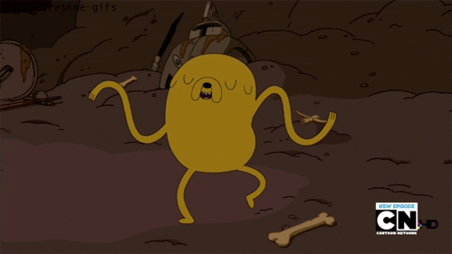
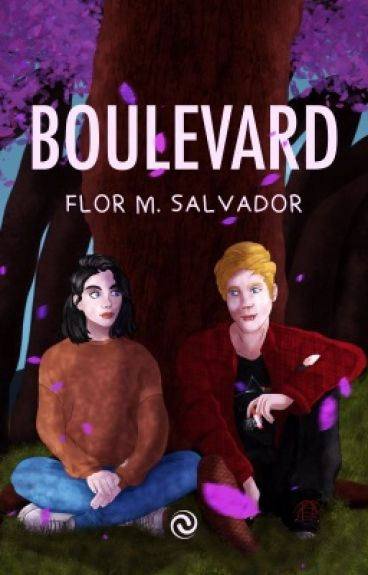
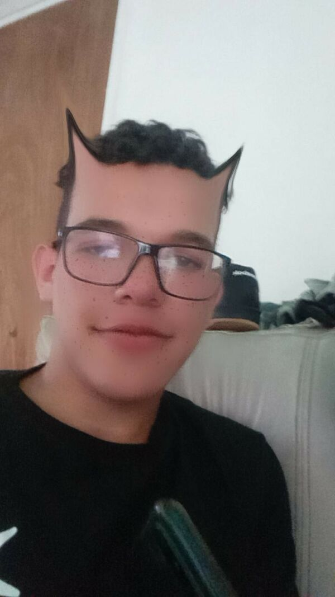
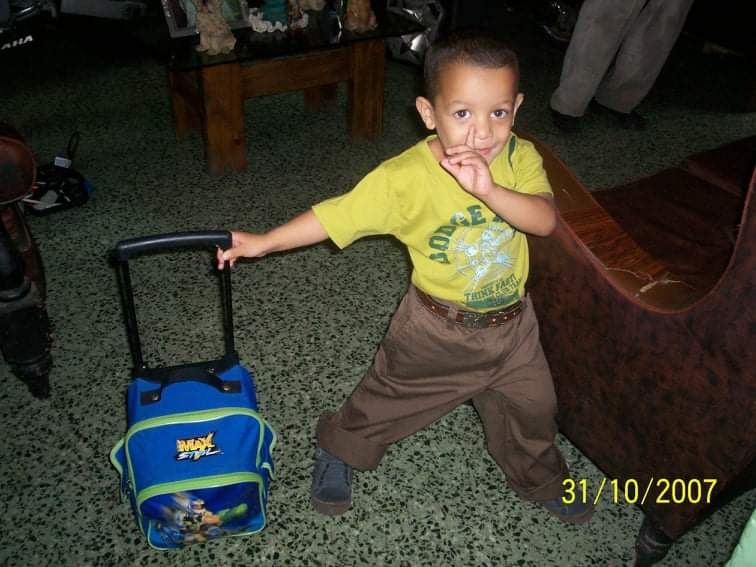

Parte del viaje es su final, ¿no?... Tal vez no es parte del final de un viaje por que no has muerto, ¿no?, pero así es como quiero empezar esto... Sé que te da miedo este viaje, y la verdad a mi también me da bastante miedo, quiero decir... Ya no podré darte un abrazo, un beso en la frente, o simplemente saber que estas allí, saber que estas en la cima del mundo, que puedo visitarte cuando quiera, que estarás ahí para cuando algo malo pase, que estaré allí para cuando se te venga el mundo abajo.
¿Sabes?, eres la amistad más duradera que he tenido, y siempre hemos hablado sobre eso, sobre que no queremos dejarnos incluso si crecemos... La verdad estoy escuchando Prince Royce mientras escribo todo esto así que si se me salen algunas palabras de él ya sabes por qué, eres una de las personas más importantes de mi vida, desde el día que dijiste que nunca nadie te había llamado "Yors" en mucho tiempo comencé a llamarte así, comencé a llamarte así para que no olvides que eres importante para mi... Sé que te gustan los libros, por lo qué quise hacer esto tal y como un libro viejo, algo que podrás leer y releer una y otra vez cuando estés allá, cuando me extrañes, o simplemente cuando quieras saber lo que significas para mí, o cuando quieras despedirte de Venezuela otra vez.
Venezuela ahorita esta jodidisimo xd, no es ni la mitad de lo que era antes, con lo cual irte de aquí es lo mejor, sin embargo obviamente te pondrá triste, digo abandonar grandes cosas que no son materiales como tus amigos, tus gatos, tu otra familia, a Gabriela, Janny... Son tantas cosas que dejaras, y sin mentirte estoy llorando justamente ahorita mientras escribo todo esto... Y es que me pone triste el hecho de que te iras, pero yo no vengo aquí a darte más razones por las cuales no irte y saltar en el avión y aterrizar en los telares, vengo a decirte que podrás hacerlo, y no Yors, no lanzarte del avión, si no ✨Conseguirte un español bien bueno✨ asie ajkdajkdak.

Te recomiendo que empaques tu posesión más preciada en el mundo, ya sabes, tu libro de Boulevard, y si puedes a mi también, paquepofa xd... Probablemente esto lo leerás allá, así que espero que hayas llegado bien, espero todo este bien, y espero tu estés bien, así que lo que voy a decirte es que, gracias por el ultimo abrazo, ahorita mismo quisiera darte mil más pero lamentablemente nos separan más 7.000 kilómetros (para ser exactos 7.258 km, obvio no lo busque para saber a cuanta distancia estaríamos jakdajkdakj), y a mi no me dejan salir a tanta distancia jdkadjkadjkakjda, aunqueeee, si llego a las 6 tal vez sí UwU... Gracias por ser la mejor amiga del mundo, quiero decir, no te vas a morir, ni esto es una despedida, bueno sí lo es, a medias, seguiremos siendo amigos, pero ya no podremos ser amigos físicamente:(... ¿Quieres algún día hacer una videollamada cuando estés allá?.

Ahora ya empezaron a ponerse las canciones tristes, ahora voy a llorar más xd, ¿sabías que me encanta escuchar vídeos motivadores?, recuerdo uno que siempre escuchaba cuando estaba aprendiendo a programar, me motivaba a seguir haciendo algo a los 12 años, y así fue que aprendí... Quería sentir que logre algo, y cuando cree mi primer calculadora fue una noche en que me acosté casi a las 5 de la mañana, escuchando una, una, y otra vez esta canción "ONE OK ROCK - Re:make"... Y ese fue el momento mágico, el momento mágico que me hizo decir "Que hermosa es la programación", el momento mágico que me impulso a mi a donde estoy ahora... Y sé que eso te ocurrirá allá... Cuando veas esas hermosas calles nunca olvides las de los telares xd, o el centro comercial de la redoma jkadjka, burdebello xd... Nah mentira, no extrañes nada de eso, extraña a las cosas, a las personas, no los lugares... Los lugares son solo eso, lugares. Recuerdo que cuando pasé por el liceo hace poco, aún podía escuchar aquellas risas vacías en los pasillos, aquellos recuerdos me venían a la mente una y otra vez, fue triste y a la vez hermoso, siento que eso lo recordaré muy bonito cuando este grande, por que todos crecemos Yors, pero trata de recordar todo con felicidad, yo siempre estaré aquí para ti, aunque ya no pueda abrazarte, aunque ya no pueda tocarte, aunque ya no pueda darte un beso en la frente, aunque ya no pueda brindarte una hamburguesa a 1$ jakdajkdkajdakj, siempre estaré para ti, y espero, enserio espero, que te vaya muy bien allá... Recuerda que, soy tu amigo fiel.

Me tienes que contar si o si como es montarse en un avión, si puedes graba todo, quiero saber como es, tal vez nunca me monte en uno y quiero saber al menos como se ve... Te amo, no es mucho lo que te estoy dando la verdad, son solo palabras, quiero decir, con el tiempo estas palabras ya no tendrán sentido... Crecemos, cambiamos, pero aún así lo que quiero es que nunca olvides Venezuela, bueno eso creo es que casi imposible jkadjka, pero en realidad lo que quiero es que nunca olvides a tus amigos, nunca olvides a las personas que estuvieron contigo desde el inicio, nunca dejes de ser tú misma, eres fuerte, eres la mejor, vas a ser la mejor pianista del mundo allá, o tal vez la mejor vendedora de plátanos del mundo, o la mejor mototaxista. Elijas lo que elijas, sé que seras la mejor.

Ve allí, y toma las mejores fotos de cualquier lugar bonito que veas, o de cualquier cosa que hagas, y mandamelas... Quisiera visitar España, pero no puedo, así que quisiera ver que tal la pasas allí... Y quiero que siempre uses esta filosofía, no, en realidad es un principio, si puedes hacer algo bueno por otra persona, tienes la obligación moral de hacerlo, cualquier persona, ya sea Venezolana o no que necesite tu ayuda, y puedas dársela, espero lo hagas... Principalmente te vas de Venezuela por eso, y muchas personas también lo hicieron, y lo harán otras... Solo quiero asegurarme que las personas que estén allá afuera estén bien, y que estés bien tú.
Sé que habrá días en los que te sientas sola, por que ya no habrá un "Voy a visitar a Janny"... Y aunque fracases, quiero decirte que siempre estaré para ti, y mientras ves a los que te ayudaron a hacer lo que eres ahora, quiero que lleves un fragmento de cada una de esas personas, a cada cosa que hagas, para no olvidar quien eres y quien quieres ser.
Cuando te sientas sola, solo lee esto, y nunca olvides que te amo... Nunca olvides que Liobersito microondas te ama, y sé que habrán momentos difíciles allá, pero también habrá momentos hermosos, y solo te digo que, esas cosas nos trazan el camino, nos hace quienes somos, y si alguien va encaminado a la grandeza ese eres tú, Yors.
Espero que guardes esto, puedes leerlo siempre que quieras, siempre estar aquí, nunca sera eliminado, al igual que si un día nos separamos, tu huella no dejara de existir aquí en mi corazón... Marcaste algo grande en mi, y en el mundo, caraepanque... Bueno, creo que marcaras algo muy grande en el mundo... Espero que cuando leas esto otra vez ya seas una gran escritora como esperaba de ti, espero que cuando leas esto otra vez sea con tus hijos, o tal vez con tu novio, espero que cuando leas esto otra vez no me olvides... Espero puedas volver algún día acá, y poder darte otro abrazo, espero que hayas crecido para esa vez, espero que me alcances... Gracias por formar parte de mi vida ~ Yors.